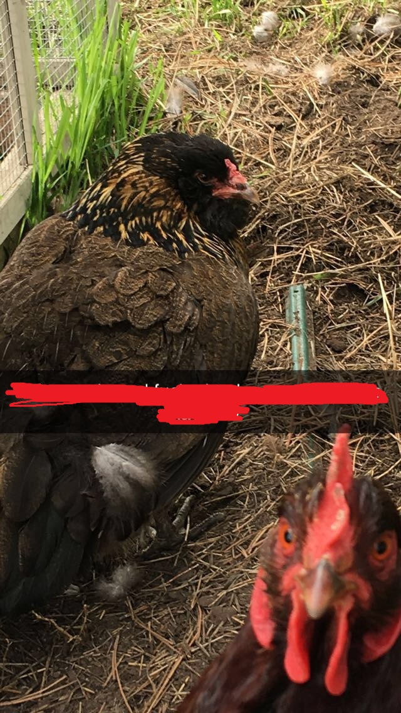

Birds
There are many different types of birds
An example of a bird is a chicken
Some chickens lay an egg almost every day, others every 1 1/2 to 2 days. Younger hens (called pullets if less than one year old) will lay smaller eggs at larger intervals until they reach maturity. 